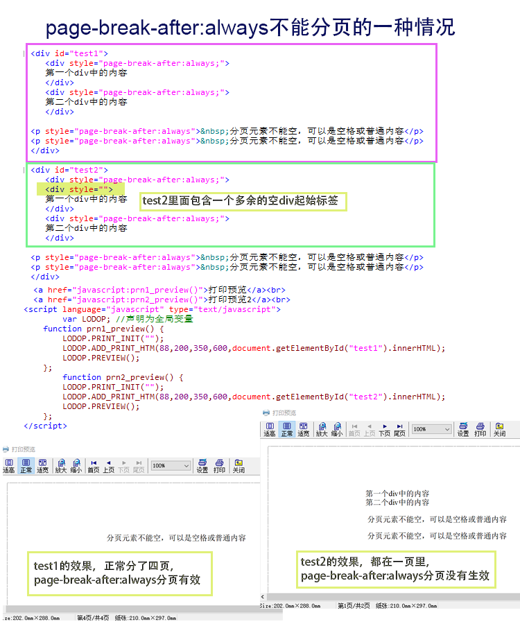

【LODOP】page-break-after:always不能分页的一种情况
page-break-after:always（或page-break-before）可以在超文本中添加，用于超文本块级元素之间的分页
注意只有前后都有换行符的block元素才能用来分页，
可以专门插入一个分页元素，也可以把一个正常元素的style设为强制分页，且必须在block元素之间进行分页。
不过如果内部的块级元素嵌套有多余的代码，也会导致无法分页，如果无法分页，建议通过删减或做简单例子逐步添加样式等，排查超文本内容。
排查超文本htm内容和样式，（建议自己可通过删减或简单例子逐步添加方式，逐步排查定位到和哪个地方有关）http://www.c-lodop.com/faq/pp8.html
例如下面的代码，内部两个div，两个p标签，第一个div中多了一个<div style="">多余代码，结果就是下面的都无法分页了
<div style="">
测试代码：
<script language="javascript" src="LodopFuncs.js"></script> <title>Document</title> </head> <body> <div id="test1"> <div style="page-break-after:always;"> 第一个div中的内容 </div> <div style="page-break-after:always;"> 第二个div中的内容 </div> <p style="page-break-after:always"> 分页元素不能空，可以是空格或普通内容</p> <p style="page-break-after:always"> 分页元素不能空，可以是空格或普通内容</p> </div> <div id="test2"> <div style="page-break-after:always;"> <div style=""> 第一个div中的内容 </div> <div style="page-break-after:always;"> 第二个div中的内容 </div> <p style="page-break-after:always"> 分页元素不能空，可以是空格或普通内容</p> <p style="page-break-after:always"> 分页元素不能空，可以是空格或普通内容</p> </div> <br> <a href="javascript:prn1_preview()">打印预览</a><br> <a href="javascript:prn2_preview()">打印预览2</a><br> <script language="javascript" type="text/javascript"> var LODOP; //声明为全局变量 function prn1_preview() { LODOP.PRINT_INIT(""); LODOP.ADD_PRINT_HTM(88,200,350,600,document.getElementById("test1").innerHTML); LODOP.PREVIEW(); }; function prn2_preview() { LODOP.PRINT_INIT(""); LODOP.ADD_PRINT_HTM(88,200,350,600,document.getElementById("test2").innerHTML); LODOP.PREVIEW(); }; </script>
图示：

如图，test1里分页正常，test2里的都没有分页
这只是个例子，所以内容很少，实际中可能htm有大量内容样式和各种嵌套，如果出现这种现象，需要仔细排查下htm内容和样式。